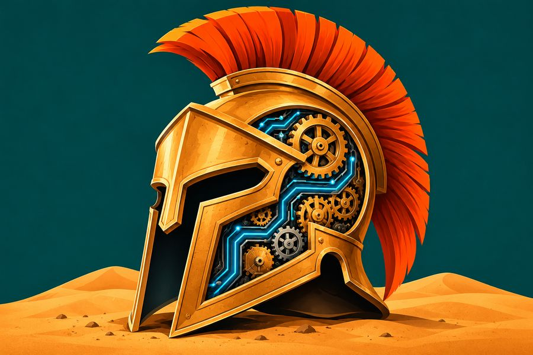
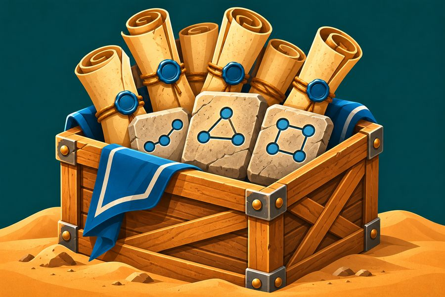
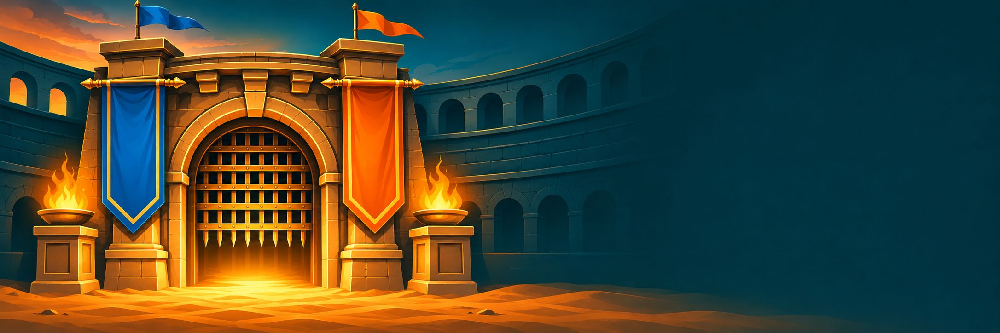

One world, played twice
Both models get the identical copy of each scenario: the same records, the same tools, the same settings and the same budget. A test that generates a new scenario for every attempt leaves no fixed answer to have seen before.
Gladiator is an open-source engine for head-to-head evaluation of AI models. Two models work through the same scenarios of a tool-using workflow, under identical settings and a hard budget. The result is a claim about that one task, with how sure it is. It is never a general ranking, and no winner is named when the evidence is thin or level.
Ledger is the record of every match, read in your browser. Nothing to install, and no API key.
Model AModel BThe same generated world for both
Both models play the same world under the same rules, every step is written down, and a fixed order decides who won.
Both models get the identical copy of each scenario: the same records, the same tools, the same settings and the same budget. A test that generates a new scenario for every attempt leaves no fixed answer to have seen before.
What each model was shown and what it did, every score, the cost and the exact API settings go into one record, sealed with a SHA-256 fingerprint. A record edited afterwards fails its check.
Claude Haiku 5.5 and DeepSeek V4.1 Flash score 0.9 points apart on a published capability index. Here is what happened when they met on the same generated worlds.
43 judged pairs: Haiku won 37, DeepSeek won 6, none tied. Between two equally good models a split this lopsided would happen less than 0.1% of the time.
The verdict for one person running it; for a business running it unattended, neither is fit. A claim about this task in a simulated world, not a ranking of the models.Claude Haiku 5.5DeepSeek V4.1 Flash
There is no leaderboard here: a result belongs to a task. Figures from the record at 05:00 UTC on Nov 26, 2026 (49 matches).
Four guarantees hold for every match, live races included.
One world, one set of tools and settings, one budget and one judge. The settings are written into the record.
A model can be used only if it has a price, and a match stops at the dollar cap it was started with.
Each record carries its own fingerprint, and gladiator verify checks a record against it.
After a match on generated scenarios, Ledger publishes their answer key beside the record, so anyone can grade it again.
Read the record, run the engine yourself, or write a new test.
Of these two models, which does this task better, how sure is that, and what should I build? Ledger keeps every match in a graph and answers from it, with the matches behind the answer.

Open source under the Apache-2.0 licence. Run a match on your own machine with your own keys, or try it for nothing with the offline practice models:
uv run gladiator match --suite suites/ten_case.yaml --a scripted:golden --b scripted:invalid --max-usd 1
A test is a package of data, never code: scenarios or a recipe that generates them, simulated tools, checks and answer keys. The aim is an open library of tests people trust, which anyone can use, fork or build for a workflow of their own.

Pick a workflow and two models, paste a key, and a brand-new scenario is raced. Seconds later the result is sealed and joins the public record.